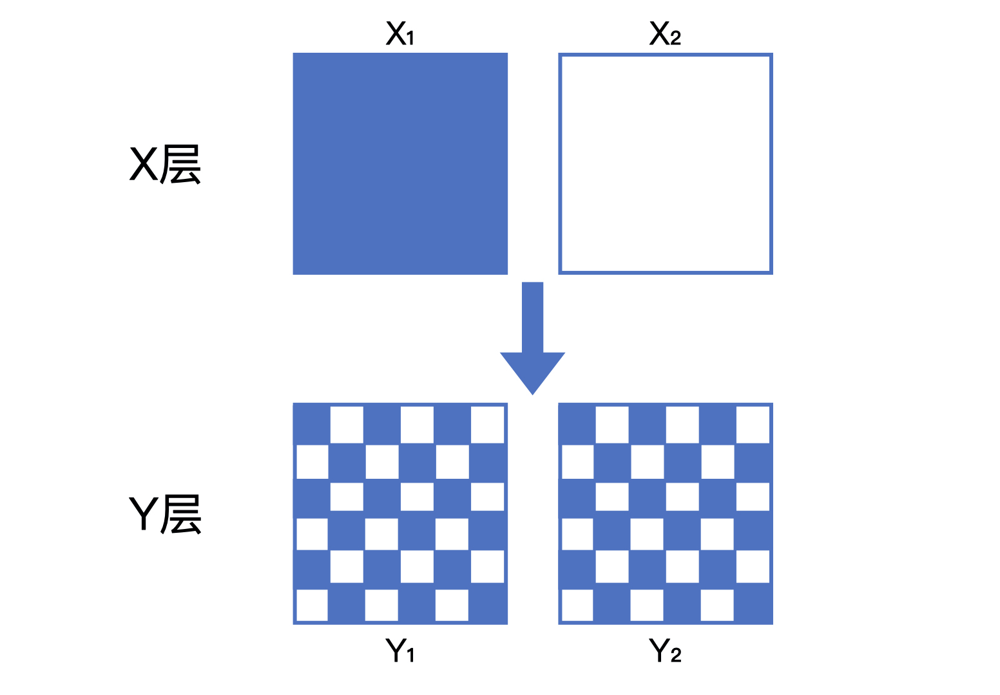

模型评估
Contents
模型评估#
模型评估方法#
1.hold-out检验：如随机70%用于训练，30%用于测试
2.k-fold交叉检验：均匀划分为k个子集，每次使用（k-1）个子集训练，另外1个子集测试，共进行k次。
3.自助法：样本总数为n，先进行n次有放回的随机抽样，用它进行训练，其他未采样到的数据进行预测。
4.时间切割：如果t时刻进行模型预测，t+1时刻的信息就不应该被引入。因此进行时间切割，比如说30天的数据，前25天用于训练，后5天用于测试。
5.离线replay：模仿线上的时间线，如用某天之前30天的数据进行训练，此天的数据进行测试，如此数天。下图显示了时间切割和离线replay的区别：

模型评估的指标#
1.准确率
$$Accuracy = \frac{n_{correct}}{n_{total}}$$
常用于点击率预估等分类问题。
2.精确率和召回率
$$Precision = \frac{#\left { Predict Positive\right } \wedge \left { Real Positive\right }}{#\left { Predict Positive\right }}$$
$$Recall = \frac{#\left { Predict Positive\right } \wedge \left { Real Positive\right }}{#\left { Real Positive\right }}$$
$$F1 = \frac{2PrecisionRecall}{Precision + Recall}$$
适用于各种情况，即使正负例不平衡。
3.交叉熵损失
$$CrossEntropyLoss = -\frac{1}{N}\sum_{i=1}^{N}(y_{i}log{\hat{y}{i}} + (1 - y{i})log(1 - \hat{y}_{i}))$$
4.均方根误差
$$RMSE = \sqrt{\frac{\sum_{i=1}^{N}(y_{i} - \hat{y}_{i})^{2}}{N}}$$
5.P-R曲线
在计算精确率和召回率的时候，我们指定top n（比如说top 10）为我们预测的正例，反之为负例。
为了考察更全面，我们需要遍历n，来得到一系列的精确率（P）和召回率（R），生成P-R曲线。

P-R-AUC即上述图像的Area Under Curve。
6.ROC曲线
ROC曲线的横坐标为FPR（假阳性率）：
$$FPR = \frac{#\left { Predict Positive\right } \wedge \left { Real Negative\right }}{#\left { Real Negative\right }}$$
纵坐标为TPR（真阳性率）：
$$TPR = \frac{#\left { Predict Positive\right } \wedge \left { Real Positive\right }}{#\left { Real Positive\right }}$$
我们选取top n为正例，得到一组（FPR, TPR），遍历n，就得到ROC曲线：

ROC-AUC即上述图像的Area Under Curve。
7.平均精度均值
用一个例子加以说明，假设推荐系统给某用户测试集的排序结果为1，0，0，1，1，1（即分最高的视频用户点了，次高的没点。。），那么可以计算每个位置的topN精度如下：

计算平均精度，只对正样本处的precision取平均，得到 AP = (1/1 + 2/4 + 3/5 + 4/6)/4 = 0.6917
最后，对每个用户都计算其AP，平均精度均值是上述AP的均值。
线上A/B测试#
线上A/B测试的必要性：
首先，离线评估无法完全还原线上的工程环境。
其次，线上系统的某些商业指标在离线评估中无法计算。（如用户点击率，用户停留时长，留存率等）
A/B测试时”分桶“和”分层“的原则：
分桶即把用户分到不同的测试组，分桶时要遵循独立和无偏原则，独立即一个用户只能被分到一个测试，无偏即分桶过程需要时纯随机的。
为了进行多路实验，需要进行A/B测试的分层，分层时需要层与层之间流量”正交“，同层之间流量”互斥“。
正交是指流量穿越每层实验时，都需要再随机打散。

”互斥“类似于”独立“，即同层间不同测试流量互斥，同一个测试对照/实验流量互斥。
推荐系统评估体系#
推荐系统评估体系指的是，由多种不同的评估方式组成的，兼顾效率和正确性，一套用于评估推荐系统的评估方案。
评估体系越往上（线上）越接近真相，但成本也越高，下面是一个典型的四层评估体系：
离线评估有着更多可利用的计算资源，实现也最简单，可以高效、快速地筛掉“不靠谱”的模型。
离线replay相当于在线下模拟线上环境，使用“历史快照”进行评估。
interleaving也是在线评估方法，在interleaving中，一个用户可以同时看到A模型和B模型的推荐结果，然后再分别评估，比如说分别计算点击率等来评估模型。
interleaving相比A/B测试消耗资源更少，评估速度更快，但是它不能评估一些复杂的商业指标，如留存率等。
下图对比了A/B测试和interleaving：
召回评估指标#
Hit Ratio(HR)#
Hit Ratio关心用户想要的，我们有没有推荐到：
$$HR@K = \frac{1}{N}\sum_{i=1}^{N}hits(i)$$
$N$: 总用户数.
$hits(i)$: 用户$i$的正访问是否在top-K的推荐列表中。
NDCG(Normalized Discounted Cummulative Gain)#
NDCG还关心用户想要的，是否放在靠前的位置：
$$NDCG@K = \frac{1}{N}\sum_{i=1}^{N}\frac{1}{\log_{2}(p_{i} + 1)}$$
$p_{i}$: 用户i的正访问在top-K推荐列表中的位置，若不在则$p_{i}=\infty$.
平均倒数排名(MRR)将NDCG中的$\log_{2}(p_{i} + 1)$换成了$p_{i}$，更强调顺序性。